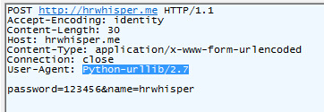

用 python 爬虫 来爬取网页信息是非常方便的！
开始玩爬虫，咔嚓咔嚓~
小虫子，大虫子，你怕不怕！ ps:Python版本2.78.
本文由hrwhisper原创，转载请点明出处（https://www.hrwhisper.me/?p=1100）
2015.5.3更新:
- 不再使用urllib，改用更为简洁、速度更快的requests。
一、课前准备
（一）爬虫技术简介
什么是网络爬虫？
百度百科上这么写：网络爬虫（又被称为网页蜘蛛），是一种按照一定的规则，自动的抓取万维网信息的程序或者脚本。另外一些不常使用的名字还有蚂蚁，自动索引，模拟程序或者蠕虫。
通俗的说，就是获取网页内容的技术。比如，网页中的文字、图片。
它还可以从一个网页到另外一个网页（广搜、深搜等），就像在互联网这个大蜘蛛网上爬来爬去一样。
可以说，就是爬取网页的源代码，从中获取我们需要的内容。（如文字、图片、其他文件等）
（二）HTTP通信过程
Http是一个基于请求/响应模式的，无状态的协议，它是建立在TCP的基础上的。
具体过程如下：
- 建立TCP连接
- Web浏览器向Web服务器发送请求
- Web浏览器发送请求头信息
- Web服务器应答
- Web服务器发送应答头信息
- Web服务器向浏览器发送数据
- Web服务器关闭TCP连接
简单的说，就是
- 建立TCP连接
- 浏览器发送请求
- 服务器回应请求
- 关闭TCP连接
（三）URL和URI
Web上可用的每种资源 -HTML文档、图像、视频片段、程序等 都由 由一个统一资源标识符（Uniform Resource Identifier, 简称"URI"）进行定位。
URL：统一资源定位符
URI：统一资源标识符
URL是URI的一个子集。URL必须指明如何获取这个资源。如HTTP，FTP等
二、python简单的爬虫
（一）最简单的网页爬虫
一个简单的爬虫如下：
回想一下刚才介绍的HTTP的通信过程，我们用get方法发送request请求，而它将返回一个response，这个response对象的text即为html源代码
1 | import requests |
（二）get和post
http中，不得不说的就是get和post.
简单的说，get就是通过url把参数发给服务器，而Post是写在header中的。
get简单的实现，即在Url后加参数。
PS:在下面这两个例子，仅仅是例子而已，直接运行会出错，因为服务器不认你的。在实际应用中，请把url改成你需要的。
GET例子：
1 | import requests |
POST例子：
1 | # -*- coding: utf-8 -*- |
可以看出：
要使用get方法，requests.get，参数为params
要使用post方法，requests.post，参数为data
对于 像12306这种证书错误或无效的的，直接get报错，怎么办呢？
把参数verify改为false即可
1 | r = requests.get('https://kyfw.12306.cn/otn/login/init', verify=False) |
（三）通过设置header 伪造浏览器
我们来抓取下刚才post发出的包，可以看到User-Agent：Python-urllib/2.7
[caption id="attachment_1106" align="alignnone" width="362"] python post抓包[/caption]
User-Agent是什么呢？这是一个用来用户浏览器的标识。
比如 我的chrome浏览器的 User-Agent如下：
Mozilla/5.0 (Windows NT 6.3; WOW64) AppleWebKit/537.36 (KHTML, like Gecko) Chrome/41.0.2272.89 Safari/537.36
Firefox如下：
Mozilla/5.0 (Windows NT 6.3; WOW64; rv:36.0) Gecko/20100101 Firefox/36.0
而往往有机智的服务器看到你只是个小蜘蛛，它果断不为你提供服务。
所以我们需要进行头部的伪装。
代码很简单，只要简单地传递一个 dict 给 headers 参数就可以了。(post和get都只需要加入headers属性！)
1 | # -*- coding: utf-8 -*- |
我们再看看包，可以看到已经变成了chrome~
当然，服务器可能还有许许多多的验证，如用referer来设置防盗链，我们也只需要加入头部即可。
如果你不知道要加入什么，最简单的办法就是用正常的浏览器去访问页面，抓包，然后头部抄正常浏览器的即可！
（四）Cookie
cookie是什么呢？
在程序中进行会话跟踪是很正常的一件事情，而我们知道，http是一个无状态的协议，一旦客户端和服务器交换完数据，连接就关闭，再次交换数据需要建立新的连接。这意味着服务器无法跟踪会话。
而cookie就是一个用于帮助跟踪会话的东西。
cookie的一个常用应用就是可以放入你的登陆信息，让你下次访问时不必重新输入用户名密码进行登陆。
需要注意的是它有不可跨域名性，即浏览器访问hrwhisper.me只会携带hrwhisper.me的cookie，不会携带baidu或者google的。（二级域名可以通过设置进行访问，默认情况下是不行的）
XSS攻击称为跨站脚本攻击，可以用来盗取别的域名的cookie。
好吧扯远了。
比如说，爬虫需要访问的内容，它需要登陆后才能进行访问，我们就需要使用到cookie记录我们登陆的信息。
一个简单的cookie使用如下，关建行我已经高亮标出来。
我们可以创建一个session对象，并且用这个session对象进行发送post或者get， Cookie的事情我们就不用管他了，可以自动的实现创建发送等。
而这个session对象的使用和前面的requests使用是一模一样的。
（具体的登陆后面我会有样例）
1 | # -*- coding: utf-8 -*- |
要拿出某个cookie的话，可以类似dict一样直接进行访问。
1 | >>> url = 'hrwhisper.me' |
（五）响应状态码
1 | # -*- coding: utf-8 -*- |
（六）其他技巧
1.通过geturl()获取真实网址 - geturl()
一个网址可能被重定向到另外一个网址，比如Lofter首页上你自定义的外站连接。
如：http://hrsay.lofter.com/hrwhisper 就被重定向到https://www.hrwhisper.me/
我们怎么获取真实的网址呢？很简单，直接用返回的对象的url属性即可
1 | import requests |
你会看到，输出为： https://www.hrwhisper.me/
2.查看获取页面的信息 - headers
查看页面的响应头
1 | # -*- coding: utf-8 -*- |
返回的是一个字典，你可以直接取出相应的字段
1 | { |
接下来你可以学习：
python模拟登陆
从网页中得到想要的信息。（我的例子都是HTML）
- python正则表达式
- python beautifulsoup
参考资料： http://www.python-requests.org/en/latest/user/quickstart/#post-a-multipart-encoded-file